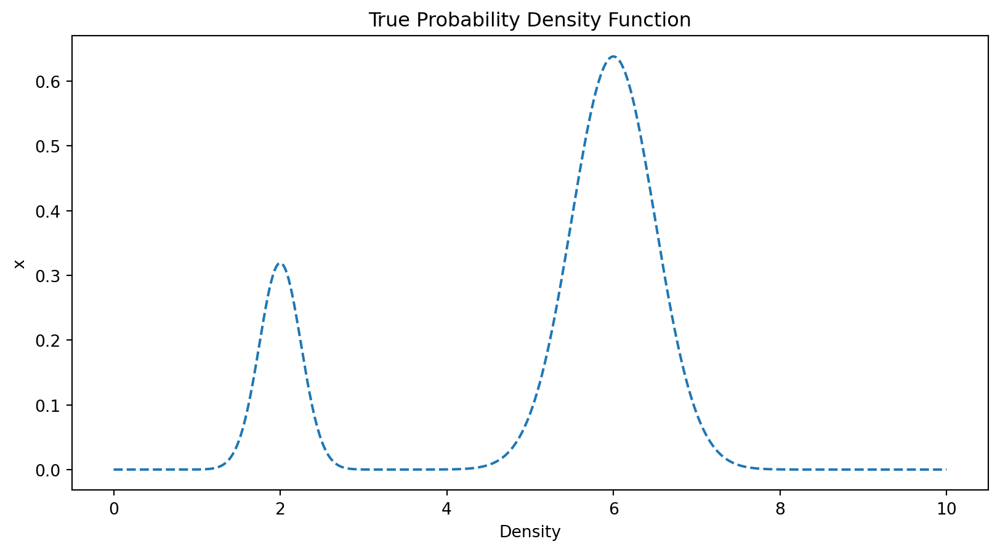
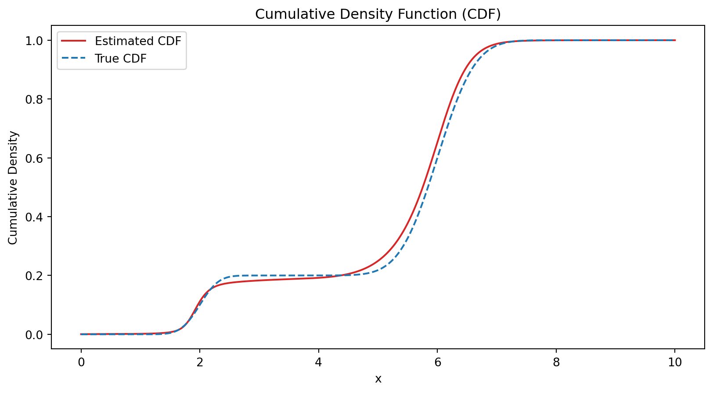

import numpy as np
from scipy import stats # for sampling
import matplotlib.pyplot as plt # for visualization
import torch # for constructing, learning, using NNs
import torch.nn as nn
import torch.optim as optimTo Dos: 1. seed setzen für sampling UND neural network training 2. Plots: - visualization of histogram - vergleich cdfs - vergleich pdfs 4. habe jetzt als innere aktivierungsfunktion tanh, hatte davor sigmoid 5. Ableitung des Netzwerks bestimmen und plotten als Density Estimate und das mit dem echten vergleichen 6. INSIGHTS: Vermutung je weniger overlap zwischen den beiden Components desto; je größer die Sample Size desto genauer matcht NN der echten Verteilungsfunktion
Load Packages
Data Generation
# construct 2-component Gaussian mixture distribution
comp1 = stats.Normal(mu=2, sigma=0.25)
comp2 = stats.Normal(mu=6, sigma=0.5)
mix = stats.Mixture([comp1, comp2], weights=[0.2, 0.8])
#n = 100
#x = mix.sample(n)Visualization of the analytic PDF

Visualization of Histogram
Define Neural Network
class Network(nn.Module):
def __init__(self, input_size, hidden_size, output_size):
super(Network, self).__init__()
self.net = nn.Sequential(
nn.Linear(input_size, hidden_size),
nn.Tanh(),
nn.Linear(hidden_size, output_size),
nn.Sigmoid()
)
def forward(self, x):
return self.net(x)Define Custom Loss Function
class LossPDE(nn.Module):
def __init__(self):
super(LossPDE, self).__init__()
def forward(self, y_pred, y_true, lambda_mon, mon_l, mon_u):
loss_prediction = torch.mean((y_pred - y_true)**2)
diff = mon_l - mon_u
loss_monotonicity = torch.mean(torch.clamp(diff, min=0))
loss_total = loss_prediction + lambda_mon*loss_monotonicity
return loss_totalConstruct model, loss and optimizer
model = Network(input_size=1, hidden_size=10, output_size=1)
criterion = LossPDE()
optimizer = optim.Adam(model.parameters(), lr=1e-3)Sample data and set monotonicity points
# sample data, sort it and convert to torch tensor
n = 200
x = mix.sample(n)
x = torch.from_numpy(np.sort(x)).float().unsqueeze(1)
# set monotonicity points
lambda_mon = 1e6
n_mon_points = 1000
mon_points = torch.linspace(x[0,0], x[-1,0], n_mon_points)[:, None]
delta = 0.1*(max(x)-min(x))/n_mon_pointsTraining
num_epochs = 200
steps_per_epoch = 1000
for epoch in range(num_epochs):
for step in range(steps_per_epoch):
preds = model(x)
u = np.random.uniform(0, 1, n)
u = torch.from_numpy(np.sort(u)).float().unsqueeze(1)
mon_l = model(mon_points)
mon_u = model(mon_points + delta)
loss = criterion(preds, u, lambda_mon, mon_l, mon_u)
optimizer.zero_grad()
loss.backward()
optimizer.step()
print(f"Epoch [{epoch+1}/{num_epochs}], Loss: {loss.item():.4f}")Epoch [1/200], Loss: 0.0280Epoch [2/200], Loss: 0.0110Epoch [3/200], Loss: 0.0060Epoch [4/200], Loss: 0.0046Epoch [5/200], Loss: 0.0074Epoch [6/200], Loss: 0.0061Epoch [7/200], Loss: 0.0036Epoch [8/200], Loss: 0.0073Epoch [9/200], Loss: 0.0061Epoch [10/200], Loss: 0.0054Epoch [11/200], Loss: 0.0050Epoch [12/200], Loss: 0.0048Epoch [13/200], Loss: 0.0040Epoch [14/200], Loss: 0.0042Epoch [15/200], Loss: 0.0041Epoch [16/200], Loss: 0.0036Epoch [17/200], Loss: 0.0045Epoch [18/200], Loss: 0.0039Epoch [19/200], Loss: 0.0031Epoch [20/200], Loss: 0.0059Epoch [21/200], Loss: 0.0053Epoch [22/200], Loss: 0.0046Epoch [23/200], Loss: 0.0034Epoch [24/200], Loss: 0.0071Epoch [25/200], Loss: 0.0048Epoch [26/200], Loss: 0.0045Epoch [27/200], Loss: 0.0044Epoch [28/200], Loss: 0.0027Epoch [29/200], Loss: 0.0029Epoch [30/200], Loss: 0.0029Epoch [31/200], Loss: 0.0032Epoch [32/200], Loss: 0.0013Epoch [33/200], Loss: 0.0011Epoch [34/200], Loss: 0.0015Epoch [35/200], Loss: 0.0019Epoch [36/200], Loss: 0.0022Epoch [37/200], Loss: 0.0018Epoch [38/200], Loss: 0.0037Epoch [39/200], Loss: 0.0026Epoch [40/200], Loss: 0.0011Epoch [41/200], Loss: 0.0010Epoch [42/200], Loss: 0.0035Epoch [43/200], Loss: 0.0021Epoch [44/200], Loss: 0.0011Epoch [45/200], Loss: 0.0011Epoch [46/200], Loss: 0.0009Epoch [47/200], Loss: 0.0013Epoch [48/200], Loss: 0.0026Epoch [49/200], Loss: 0.0011Epoch [50/200], Loss: 0.0010Epoch [51/200], Loss: 0.0019Epoch [52/200], Loss: 0.0010Epoch [53/200], Loss: 0.0011Epoch [54/200], Loss: 0.0013Epoch [55/200], Loss: 0.0013Epoch [56/200], Loss: 0.0022Epoch [57/200], Loss: 0.0015Epoch [58/200], Loss: 0.0011Epoch [59/200], Loss: 0.0013Epoch [60/200], Loss: 0.0014Epoch [61/200], Loss: 0.0016Epoch [62/200], Loss: 0.0015Epoch [63/200], Loss: 0.0009Epoch [64/200], Loss: 0.0014Epoch [65/200], Loss: 0.0012Epoch [66/200], Loss: 0.0032Epoch [67/200], Loss: 0.0012Epoch [68/200], Loss: 0.0021Epoch [69/200], Loss: 0.0023Epoch [70/200], Loss: 0.0016Epoch [71/200], Loss: 0.0011Epoch [72/200], Loss: 0.0009Epoch [73/200], Loss: 0.0007Epoch [74/200], Loss: 0.0010Epoch [75/200], Loss: 0.0023Epoch [76/200], Loss: 0.0013Epoch [77/200], Loss: 0.0008Epoch [78/200], Loss: 0.0008Epoch [79/200], Loss: 0.0007Epoch [80/200], Loss: 0.0009Epoch [81/200], Loss: 0.0009Epoch [82/200], Loss: 0.0018Epoch [83/200], Loss: 0.0012Epoch [84/200], Loss: 0.0026Epoch [85/200], Loss: 0.0048Epoch [86/200], Loss: 0.0011Epoch [87/200], Loss: 0.0039Epoch [88/200], Loss: 0.0010Epoch [89/200], Loss: 0.0013Epoch [90/200], Loss: 0.0007Epoch [91/200], Loss: 0.0008Epoch [92/200], Loss: 0.0018Epoch [93/200], Loss: 0.0020Epoch [94/200], Loss: 0.0019Epoch [95/200], Loss: 0.0010Epoch [96/200], Loss: 0.0008Epoch [97/200], Loss: 0.0009Epoch [98/200], Loss: 0.0017Epoch [99/200], Loss: 0.0011Epoch [100/200], Loss: 0.0006Epoch [101/200], Loss: 0.0009Epoch [102/200], Loss: 0.0009Epoch [103/200], Loss: 0.0014Epoch [104/200], Loss: 0.0006Epoch [105/200], Loss: 0.0012Epoch [106/200], Loss: 0.0007Epoch [107/200], Loss: 0.0013Epoch [108/200], Loss: 0.0007Epoch [109/200], Loss: 0.0006Epoch [110/200], Loss: 0.0038Epoch [111/200], Loss: 0.0013Epoch [112/200], Loss: 0.0014Epoch [113/200], Loss: 0.0019Epoch [114/200], Loss: 0.0010Epoch [115/200], Loss: 0.0006Epoch [116/200], Loss: 0.0007Epoch [117/200], Loss: 0.0006Epoch [118/200], Loss: 0.0007Epoch [119/200], Loss: 0.0008Epoch [120/200], Loss: 0.0014Epoch [121/200], Loss: 0.0010Epoch [122/200], Loss: 0.0019Epoch [123/200], Loss: 0.0008Epoch [124/200], Loss: 0.0059Epoch [125/200], Loss: 0.0004Epoch [126/200], Loss: 0.0015Epoch [127/200], Loss: 0.0011Epoch [128/200], Loss: 0.0022Epoch [129/200], Loss: 0.0008Epoch [130/200], Loss: 0.0010Epoch [131/200], Loss: 0.0005Epoch [132/200], Loss: 0.0008Epoch [133/200], Loss: 0.0009Epoch [134/200], Loss: 0.0017Epoch [135/200], Loss: 0.0007Epoch [136/200], Loss: 0.0029Epoch [137/200], Loss: 0.0019Epoch [138/200], Loss: 0.0019Epoch [139/200], Loss: 0.0006Epoch [140/200], Loss: 0.0023Epoch [141/200], Loss: 0.0006Epoch [142/200], Loss: 0.0018Epoch [143/200], Loss: 0.0016Epoch [144/200], Loss: 0.0004Epoch [145/200], Loss: 0.0021Epoch [146/200], Loss: 0.0019Epoch [147/200], Loss: 0.0011Epoch [148/200], Loss: 0.0007Epoch [149/200], Loss: 0.0010Epoch [150/200], Loss: 0.0007Epoch [151/200], Loss: 0.0006Epoch [152/200], Loss: 0.0006Epoch [153/200], Loss: 0.0009Epoch [154/200], Loss: 0.0011Epoch [155/200], Loss: 0.0006Epoch [156/200], Loss: 0.0038Epoch [157/200], Loss: 0.0009Epoch [158/200], Loss: 0.0014Epoch [159/200], Loss: 0.0008Epoch [160/200], Loss: 0.0010Epoch [161/200], Loss: 0.0006Epoch [162/200], Loss: 0.0005Epoch [163/200], Loss: 0.0022Epoch [164/200], Loss: 0.0013Epoch [165/200], Loss: 0.0013Epoch [166/200], Loss: 0.0008Epoch [167/200], Loss: 0.0006Epoch [168/200], Loss: 0.0010Epoch [169/200], Loss: 0.0012Epoch [170/200], Loss: 0.0031Epoch [171/200], Loss: 0.0005Epoch [172/200], Loss: 0.0009Epoch [173/200], Loss: 0.0007Epoch [174/200], Loss: 0.0005Epoch [175/200], Loss: 0.0005Epoch [176/200], Loss: 0.0021Epoch [177/200], Loss: 0.0007Epoch [178/200], Loss: 0.0006Epoch [179/200], Loss: 0.0018Epoch [180/200], Loss: 0.0021Epoch [181/200], Loss: 0.0014Epoch [182/200], Loss: 0.0026Epoch [183/200], Loss: 0.0010Epoch [184/200], Loss: 0.0005Epoch [185/200], Loss: 0.0018Epoch [186/200], Loss: 0.0010Epoch [187/200], Loss: 0.0007Epoch [188/200], Loss: 0.0007Epoch [189/200], Loss: 0.0018Epoch [190/200], Loss: 0.0010Epoch [191/200], Loss: 0.0006Epoch [192/200], Loss: 0.0006Epoch [193/200], Loss: 0.0006Epoch [194/200], Loss: 0.0010Epoch [195/200], Loss: 0.0008Epoch [196/200], Loss: 0.0006Epoch [197/200], Loss: 0.0004Epoch [198/200], Loss: 0.0007Epoch [199/200], Loss: 0.0009Epoch [200/200], Loss: 0.0006import matplotlib.pyplot as plt
xx = torch.linspace(0, 10, 500).unsqueeze(1)
with torch.no_grad():
yy = model(xx)
plt.figure(figsize=(10, 5))
#plt.plot(x.numpy(), u.numpy(), label="Target (sorted uniform)", color='green')
plt.plot(xx.numpy(), yy.numpy(), label="Learned CDF", color='blue')
plt.plot(xx.numpy(), mix.cdf(xx), label="Learned CDF", color='red')
plt.title("NN fitting empirical CDF")
plt.legend()
plt.show()
# Define a function to compute derivative of the NN output wrt input
def compute_pdf_from_cdf(model, x):
x = x.requires_grad_(True) # enable grad w.r.t x
cdf = model(x)
grad_outputs = torch.ones_like(cdf)
pdf = torch.autograd.grad(
outputs=cdf,
inputs=x,
grad_outputs=grad_outputs,
create_graph=True,
retain_graph=True,
only_inputs=True
)[0]
return pdf
# Create a grid of points where we want to evaluate PDF
xx = torch.linspace(0, 10, 100).unsqueeze(1)
# Compute CDF and PDF estimates
with torch.no_grad():
cdf_est = model(xx)
pdf_est = compute_pdf_from_cdf(model, xx).detach()
# Compute true PDF from the mixture for comparison
xx_np = xx.detach().numpy().flatten()
true_pdf = mix.pdf(xx_np)
# Plot
plt.figure(figsize=(10, 6))
plt.plot(xx_np, pdf_est.numpy(), label='NN PDF Estimate', color='blue')
plt.plot(xx_np, true_pdf, label='True PDF', color='red', linestyle='dashed')
plt.title("PDF estimated by derivative of NN CDF vs True PDF")
plt.xlabel("x")
plt.ylabel("Density")
plt.legend()
plt.show()